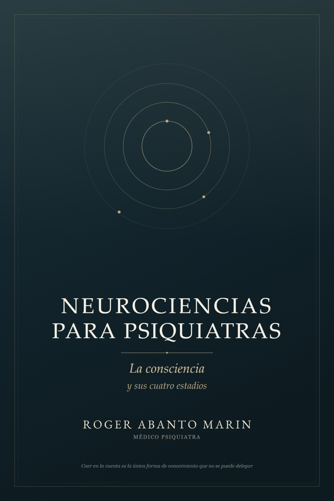
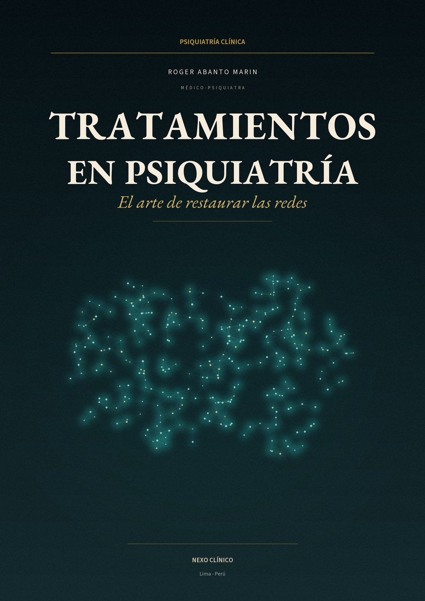
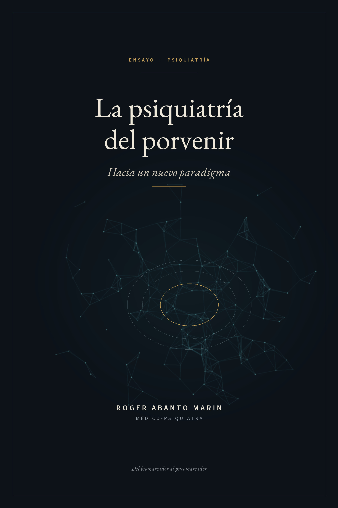

Biblioteca personal · 2026
WikiSeek
Todo lo que hemos investigado sobre lisdexanfetamina y nootrópicos, reunido en un solo lugar y con buscador propio. Sin volver a empezar.
7 artículos · 19.995 palabras · 2 informes · 61 referencias
Lisdexanfetamina
Profármaco de dexanfetamina: química, farmacología, eficacia en TDAH y trastorno por atracones, seguridad, abuso y situación regulatoria en el Perú.
NootrópicosNootrópicos
Guía integral de fármacos, suplementos y productos comercializados como potenciadores cognitivos: evidencia, dosis, seguridad, ética y regulación.
TemasEstimulantes y adicciones
Sustitución agonista, evidencia en cocaína y metanfetamina, y manejo del TDAH comórbido con trastorno por consumo de sustancias.
TemasSeguridad, interacciones y regulación de los nootrópicos
Riesgos cardiovasculares, psiquiátricos, hepáticos y hematológicos; interacciones; regulación y señales de alarma.
ReferenciaBitácora de la biblioteca
Cronología de las consultas, los entregables y las conclusiones principales de la biblioteca.
ReferenciaGlosario
Términos de farmacología, neurología y regulación usados en los artículos.
ReferenciaReferencias
Bibliografía completa de los informes de lisdexanfetamina y nootrópicos.
No hay resultados. Prueba con otra palabra o abre el glosario.
Libros del autor
Tres libros para pensar la psiquiatría
Del síntoma a la persona, de la lesión a la red, del biomarcador al psicomarcador. Los tres libros están en Amazon; aquí puedes leer una muestra gratuita de los dos primeros capítulos.

Neurociencias para psiquiatras
La consciencia y sus cuatro estadios
Ver ficha, muestra y Amazon →
Tratamientos en psiquiatría
El arte de restaurar las redes
Ver ficha, muestra y Amazon →
La psiquiatría del porvenir
Hacia un nuevo paradigma en psiquiatría
Ver ficha, muestra y Amazon →Cómo usar la biblioteca
Buscar
Escribe en el buscador o pulsa Ctrl + K. La búsqueda recorre el texto completo de los artículos.
Navegar
La barra lateral agrupa los contenidos por categoría. Cada artículo tiene su propio índice interno.
Descargar
Los documentos originales (.txt, .pdf, .docx) están en la sección Documentos.